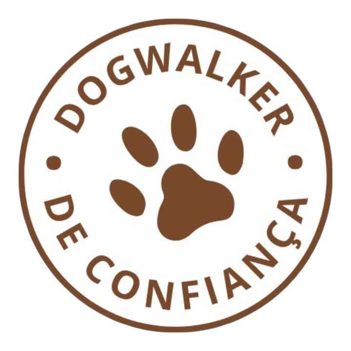
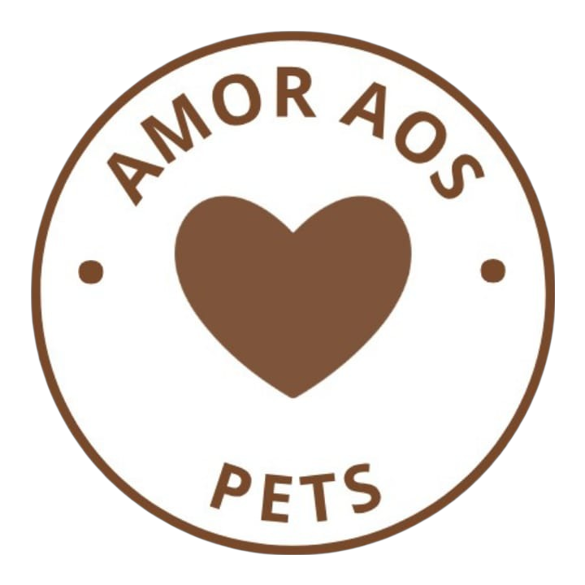

Passeios alegres, seguros e cheios de carinho para seu doguinho.
Seu pet feliz, você tranquilo(a) — é assim que a gente caminha juntos!
Quem sou
Me chamo Ana e sou dogwalker com mais de 5 anos de experiência cuidando de cães de todos os tamanhos e temperamentos. Amo o que faço e acredito que cada passeio é mais do que uma simples caminhada — é um momento de alegria, liberdade e conexão. Trabalho sempre com responsabilidade, atenção e muito carinho, garantindo que seu pet tenha uma experiência segura, divertida e cheia de afeto. Se você procura alguém de confiança para cuidar do seu melhor amigo, pode contar comigo!


Depoimentos
"A Ana é maravilhosa! Meu cachorro sempre volta feliz e cansado. Recomendo demais!"
Mariana, tutora do Max
"A Ana é incrível! O Thor ama os passeios e voltou a ser mais ativo."
Juliana, tutora do Thor
"Profissional excelente. A Nina tem medo de tudo, mas com Ana ela se sente segura."
Ricardo, tutor da Nina
Área de Atuação
Atuo na Zona Sul de Londrina-PR.
Valores
Unitários
- Passeio curto (30 min) — R$40
- Passeio médio (45 min) — R$45
- Passeio longo (1h) — R$55
Pacotes
- 10 passeios curtos — R$350
- 10 passeios médios — R$400
- 10 passeios longos — R$460
Contato
Para agendamentos e dúvidas, entre em contato pelo:
Whatsapp: Clique aqui
Email: contato@caominho.com
Perguntas Frequentes
- Passeia na chuva?
- Sim, com capa de chuva e autorização do tutor.
- E se meu cão for bravo?
- Utilizamos aproximação gradual e cuidadosa.